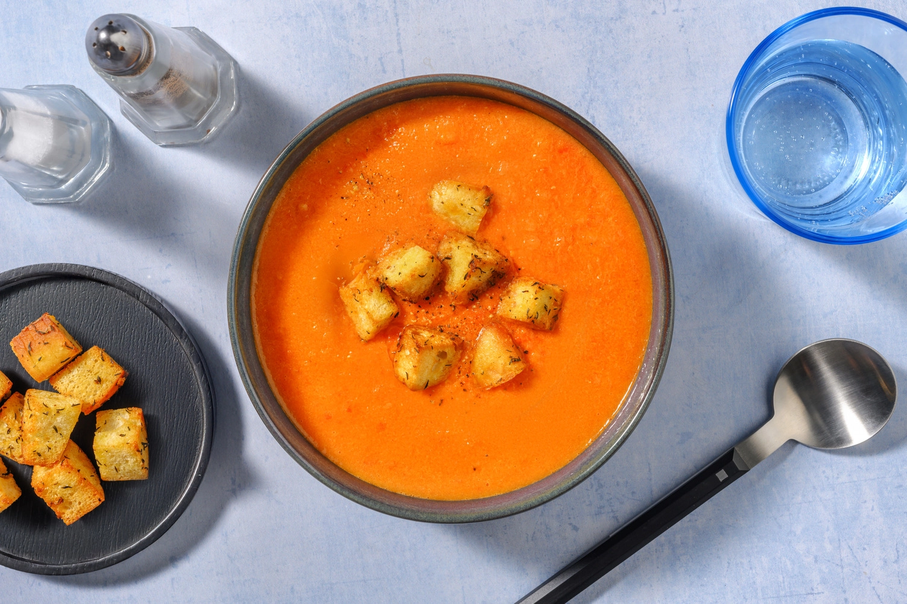
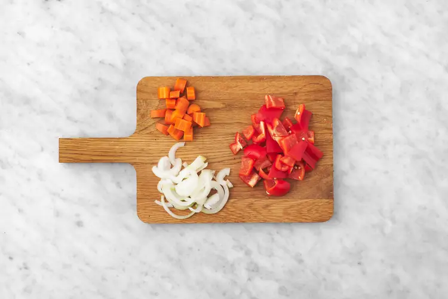
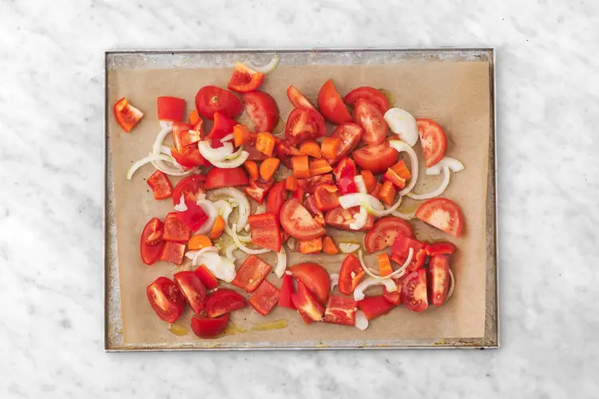
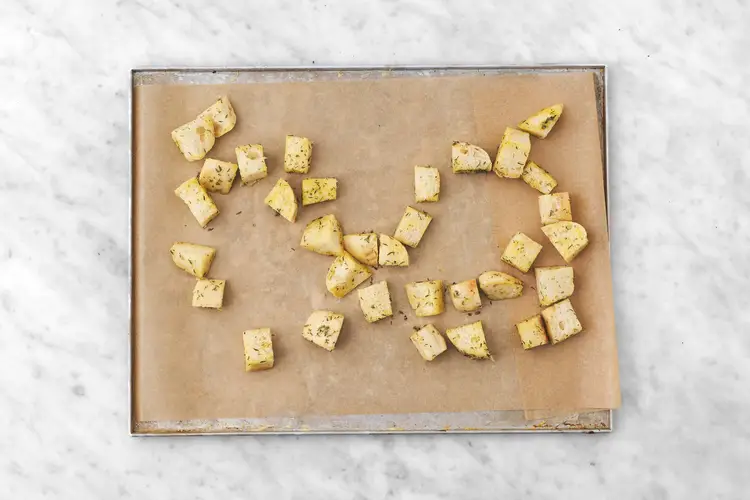
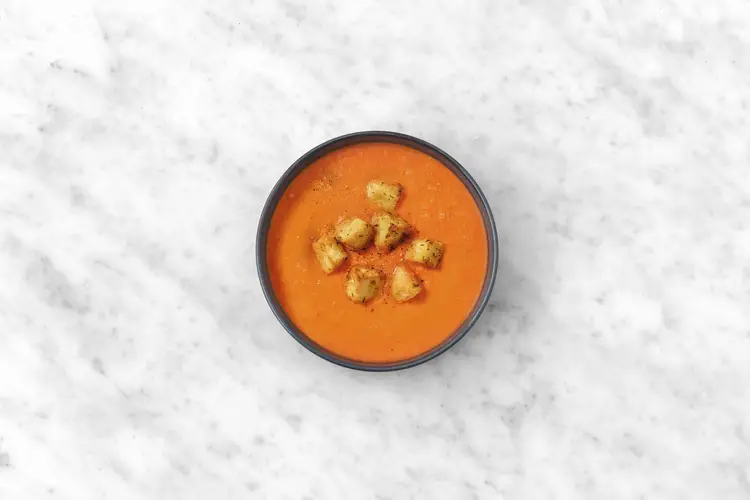

Crema caliente de tomate y verduras asadas
13 NOVIEMBRE, 2022

Instrucciones
- 5 unidad(es) Tomate
- 1 unidad(es) Cebolla
- 1 unidad(es) Zanahoria
- 1 unidad(es) Pimiento rojo
- 2 unidad(es) Pan de chapata
- 1 sobre(s) Tomillo seco
Primer paso
¡Asegúrate de utilizar las cantidades indicadas a la izquierda para preparar tu receta! Precalienta el horno a 220 Cº. Corta el pimiento por la mitad y quítale las semillas. Luego, córtalo en dados de 1 cm. Pela la zanahoria y córtala por la mitad a lo largo. Luego, corta cada mitad en medias lunas de 0,5-1 cm. Pela la cebolla, divídela en dos y córtala en tiras finas.

Segundo paso
Corta los tomates por la mitad, luego, corta cada mitad en 2 gajos. Coloca los vegetales en una bandeja de horno con papel de horno y agrega un chorrito de aceite, sal y pimienta. Mezcla y hornea a media altura 20-25 min, hasta que los vegetales queden tiernos. Remueve a mitad de cocción.

Tercer paso
Pela y ralla el ajo (ver cantidad en ingredientes). En un bol grande, mezcla el tomillo seco, el ajo rallado, un chorrito generoso de aceite, sal y pimienta al gusto. Corta el pan de chapata en dados de 1-2 cm, agrégalo al bol con el aderezo y mezcla. Coloca los picatostes en una bandeja de horno con papel de horno y hornea en el estante medio-alto 6-8 min, hasta que queden dorados y crujientes.

Cuarto paso
Cuando los vegetales estén listos, colócalos en una jarra medidora y añade el agua y el azúcar (ver cantidad en ingredientes de ambos). Tritura con ayuda de un túrmix hasta obtener una crema homogénea. Rectifica de sal y pimienta y sirve la crema de tomate en platos. Agrega encima los picatostes al tomillo.
